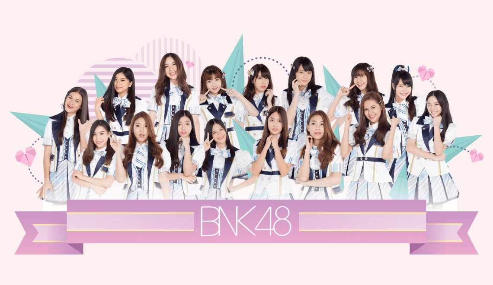

ไอดอลของฉัน
วง BNK48

ชื่นชอบผลงานของพวกเขาและพวกเขามีความสามารถหลายอย่าง
คือ ร้องเก่ง เต้นเก่ง และเรียนเก่ง
สมาชิกในวงที่ชอบมากที่
สุดคือเฌอปราง BNK48 ผลงานเพลงของพวกเขาที่ขอบคือ คุกกี้เสี่ยงทาย เป็นต้น
วง Blackpink
เป็นเกิร์ลกรุปหญิงของประเทศเกาหลีใต้
อย่างเเรกเราต้องไปทำความรู้จักกับวง Blackpink
เป็นเกิร์ลกรุปหญิง
ของประเทศเกาหลีใต้
ชอบติดตามดูผลงานของพวกเขาทั้ง 4 สาว และขอ
แนะนำสมาชิกในวง Blackpink คือ จีซู,
เจนนี, โรเซ และลิซา
ผลงานเพลงที่ชอบคือ DDU-DU DDU-DU เป็นต้น
วง BTS
เป็นกลุ่มดนตรีชายเกาหลีใต้แนวเคป็อปและฮิปฮอป สังกัดบิกฮิตเอนเตอร์เทนเมนต์
ประกอบด้วย
สมาชิกจำนวนเจ็ดคนคือ จิน, ชูกา, เจ-โฮป,
แร็ปมอนสเตอร์, จีมิน, วี และจ็องกุกหนูชอบการเต้น
ของพวกเขามาก ผลงานเพลงที่ชอบคือ BTS IDOL เป็นต้น
วง 9by9
ชอบมากที่สุดในวงนี้คือ เจมส์ ธีรดนย์ ชอบดูซี่รี่ที่เขาแสดงและตอนนี้ก็ติดตามผลรวมของ 9by9